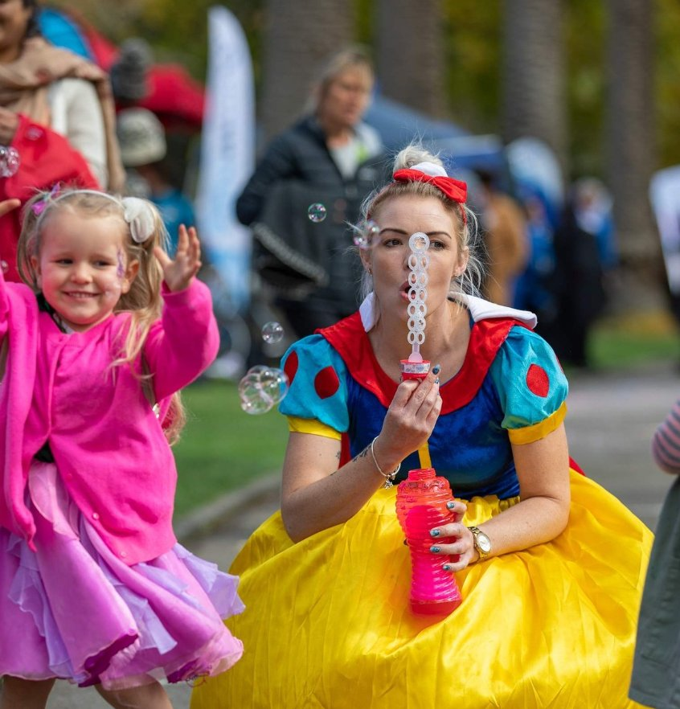
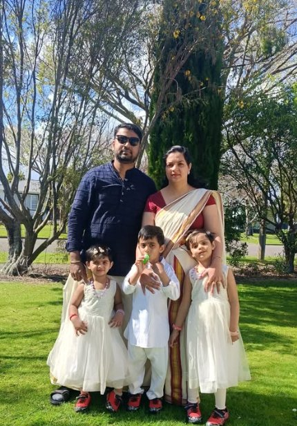
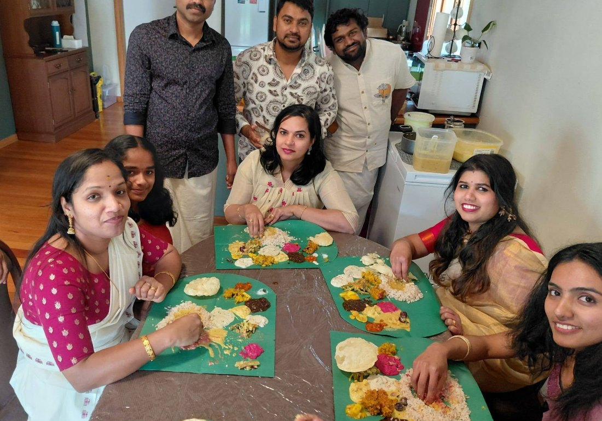
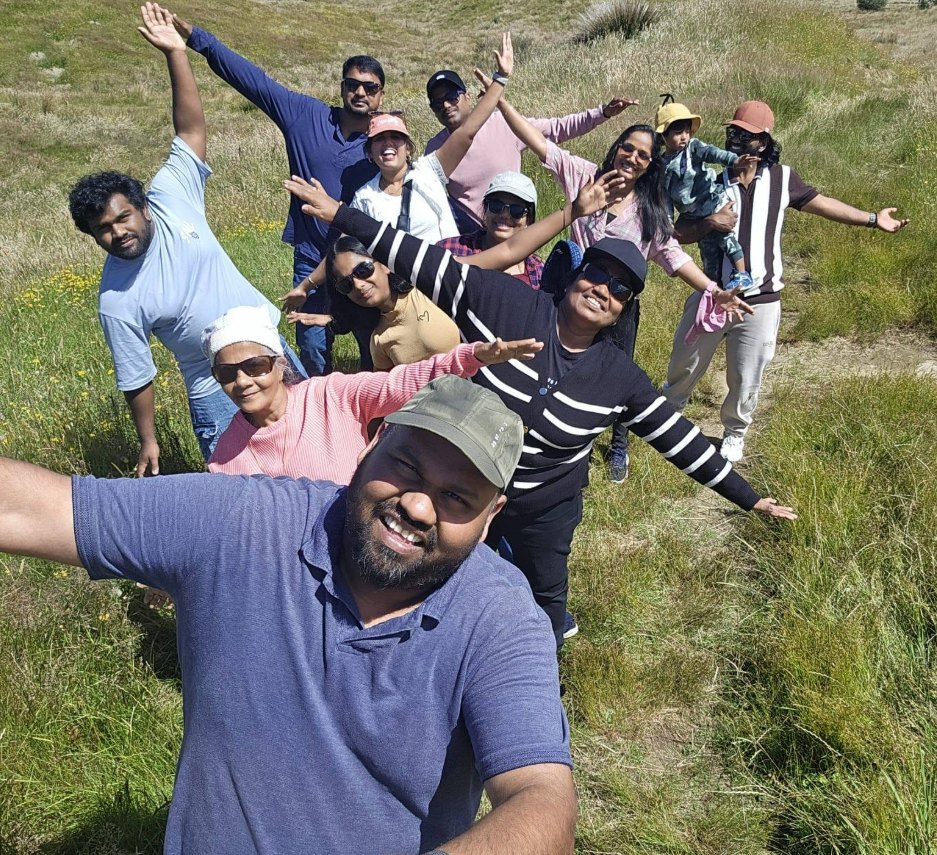

Finding your people
A new job is only half of a move. The other half is belonging: faith, culture, friendship and a taste of home.
Belonging is what makes a move last
The clinicians who settle for good aren’t the ones with the biggest salary. They’re the ones who found their people — a place to worship, a familiar festival, a friend who cooks the food of home.

New Zealand is a multicultural country. Its cities and towns are home to long-established Māori and Pacific communities alongside large Asian, Middle Eastern, African and European populations, and the healthcare workforce itself is wonderfully international. Whatever your faith, culture or background, the odds are good that a community already exists, ready to welcome you.
If there’s one promise in this guide, it’s this: you will not have to leave who you are behind to move here. Belonging takes a little time and a little effort, but the ingredients are all here, waiting.
A place to worship, whatever your faith
Freedom of religion is protected in law, and there are active communities across all the major faiths. In the cities especially, you’ll find established congregations, and many smaller towns have more than newcomers expect.
Churches of every tradition
From Anglican, Catholic and Presbyterian to Pentecostal and a wide range of ethnic-specific congregations, Christian communities are found in every city and most towns: many with services in languages other than English.
Mosques & Islamic centres
Established Muslim communities in the main centres run mosques, Islamic centres and schools, with halal food increasingly easy to find. Smaller cities have growing congregations and prayer spaces too.
Temples & cultural life
A large and active Hindu community supports temples and cultural associations, with major festivals such as Diwali celebrated publicly in the cities, often as city-wide events.
Gurdwaras & community
A growing Sikh population maintains gurdwaras in the main centres, offering worship, langar and a strong sense of community for new arrivals.
Temples & meditation
Buddhist temples and meditation centres reflect New Zealand’s diverse Asian communities, welcoming both heritage practitioners and newcomers to the practice.
Smaller, settled communities
Long-established Jewish congregations and a range of other faith communities are present, particularly in the larger cities. If your faith is part of your life, it can stay that way here.
Faith communities are often the fastest route to friendship and practical help when you arrive: many run welcome groups, share local knowledge and lend a hand with the early settling-in. It’s worth reaching out before you even land.
Chances are, your community is already here
Healthcare professionals come to New Zealand from all over the world, and where people settle, communities form. You’ll find cultural associations, social groups and informal networks that make the distance from home feel a great deal smaller.

Established diaspora networks
Large and active communities from the UK and Ireland, India, the Philippines, South Africa, China and across the Pacific mean cultural associations, social events and familiar faces are rarely far away.
Professional peer groups
Because so many clinicians have made this exact move, you’ll find others in your profession who share your background: people who understand both the work and the journey, and are generous with advice.
Cultural festivals & events
Diwali, Eid, Lunar New Year, Pasifika and many more are celebrated openly and often city-wide: public, joyful occasions that make it easy to stay connected to your heritage and share it with new friends.
Community language & schooling
Many communities run weekend language and culture classes so children stay connected to their heritage language and traditions while they grow up as young New Zealanders.
Social media & local groups
Active online groups for almost every nationality and city are where newcomers ask questions, find housing, swap recommendations and arrange the first real-life catch-ups.
Sport & shared interests
Cricket, football, rugby, cultural dance, choirs and hobby clubs are some of the easiest, most natural ways to meet people who share both your interests and, often, your background.
“I was surprised by how strong the Keralan community is in Manawatū. There are lots of families here and people were incredibly welcoming when we arrived. Having people around who understand where you’ve come from, while you’re also building a new life in New Zealand, really helped us settle.”
A country that welcomes you as you are
New Zealand has a strong, settled culture of inclusion, backed by law. People are protected from discrimination on the grounds of race, religion, gender, sexual orientation and more, and, just as importantly, acceptance is woven into everyday life.
LGBTQ+ communities
New Zealand is widely regarded as one of the most welcoming places in the world for LGBTQ+ people, with legal equality, visible communities and Pride events in the main centres.
Equality at work
Workplaces, including across the health system, take inclusion and anti-discrimination seriously. You should expect to be treated with respect and fairness as a matter of course.
Families of every shape
Single parents, blended families, same-sex parents and multi-generational households are all an ordinary, accepted part of New Zealand life.
Manaakitanga, the welcome at the heart of it
One of the first Māori words you’ll come across is manaakitanga: caring for others, hospitality and generosity towards newcomers. It isn’t a slogan — it’s something most newcomers notice early.
As a newcomer you’ll be welcomed into a country shaped by Te Tiriti o Waitangi and the relationship between Māori and the Crown. Understanding a little of this, the role of te reo Māori, the customs of a pōwhiri (welcome) or a karakia (blessing) you may encounter at work is part of settling in respectfully and well. It’s also one of the quiet privileges of making your life here.
You don’t need to know everything on arrival. A willingness to learn and to show respect goes a long way, and our About New Zealand guide covers the history, Te Tiriti and te reo in more depth.
The small comforts that matter most
It’s the little things that catch people out: the spice you can’t find, the snack from childhood. New Zealand’s diversity means most are closer than you’d think.

Food & groceries
International supermarkets and specialist grocers in the cities stock ingredients from across Asia, the Middle East, Africa and Europe. Halal, kosher and a huge range of cultural foods are increasingly available, and online ordering fills most gaps.
Restaurants & community kitchens
From regional Indian and Filipino to Middle Eastern, Korean and beyond, you’ll find restaurants and takeaways serving the real thing, and community events where home cooking is shared generously.
Festivals & traditions
The celebrations you grew up with are very likely marked here too, often publicly. Keeping your own traditions alive, and being invited into others’, is part of what makes life here rich.
International & Asian supermarkets
Big world-food ranges and dedicated Asian grocers.
Tai Ping Asian Supermarket The Asian Grocer (online) New World, world-food aislesSouth African specialists
Biltong, boerewors, braai & pantry staples.
Something From Home The South African Shop Biltong & Wors ShopUK & British specialists
British groceries, sweets, biscuits & tea.
UK Foods NZ A Little Bit of Britain British Food ImportsThe big supermarkets — New World, PAK’nSAVE and Woolworths. All carry growing international aisles, and most cities have large Asian grocers such as Lim Chhour and Da Hua alongside Indian, Korean, Middle Eastern and Pacific specialists. Links open external sites we don’t control, and range and availability vary by region.
Halal
Halal food is widely available, especially in the main centres. Many mainstream supermarkets and butchers stock halal-certified meat (FIANZ is the country’s main halal certifier), and cities have dedicated halal butchers, grocers and restaurants. In smaller towns the choice narrows, but it’s rarely far away.
Kosher
Kosher options are more limited but present — Auckland has the widest range, including a kosher store and deli, and Wellington has some too. Elsewhere it’s mostly online or through the local Jewish community. The New Zealand Jewish Council and local congregations are the best people to point you to current suppliers.
How to find your people, quickly
Community rarely just appears, but a little intention in your first weeks makes all the difference. These are the things we suggest to every clinician we place, and they work.

Connect before you arrive
Search online for groups linked to your nationality, faith or city. Introducing yourself early means a friendly contact or two before you even land.
Say yes early and often
The first invitations, a coffee, a barbecue, a community event, are how roots begin. Accepting them, even when you’re tired, pays off quickly.
Use your workplace
Colleagues are often your first community, and many have made the same move. Ask them where to worship, shop and gather, they’ll know.
Join one regular thing
A weekly class, sports team, choir or place of worship gives your week an anchor and the same faces each time, which is how acquaintances become friends.
Bring your culture with you
Cook for new neighbours, share your festivals, contribute what’s yours. Belonging flows both ways, and people love being welcomed into something new.
Ask us
We know the communities in the regions we place people, and we’re always happy to point you towards the right groups, places and people for your family.
Useful links, faith bodies & community
The national organisations for the major faiths, each with regional centres in the main cities, plus a couple of practical ways to find local groups wherever you settle.
Christian churches
National churches with parishes nationwide.
Catholic Church in New Zealand Anglican Church in Aotearoa, NZ & Polynesia Presbyterian Church of Aotearoa NZOther major faiths
National peak bodies, with centres in each main city.
Federation of Islamic Associations of NZ Hindu Council of New Zealand New Zealand Jewish CouncilFinding people locally
Local groups, societies and a friendly introduction.
Citizens Advice Bureau directory Ask Ethicare for an introductionSikh, Buddhist and many other faith communities also have well-established gurdwaras, temples and centres across the main cities, as do a great many cultural and national societies. If you can’t find yours, tell us where you’re moving and what matters to you, and we’ll point you to the nearest community. For newcomer networks and a region-by-region list of local groups, see Useful contacts. Links open on external sites we don’t control.

People worry, quietly, about whether they’ll fit in, whether they’ll find somewhere to pray, food that tastes like home, friends who understand them. I understand that worry completely. What I’ve seen is how much is already here, and how warmly people are received once they reach out. The clinicians who thrive are the ones who let New Zealand welcome them and who keep hold of their own culture at the same time. You don’t have to choose. Helping a family find their community, the temple, the grocer, the weekend cricket, is some of the most rewarding work we do.
SophieCEO & Founder, Ethicare Resourcing
The questions people ask us about belonging
Will I be able to practise my religion freely?
Yes. New Zealand has freedom of religion, and active communities exist across all the major faiths, especially in the cities. Places of worship, religious schools and cultural associations are well established, and faith communities are often among the warmest and most practical sources of support for newcomers.
Is there a community of people from my country?
Almost certainly, particularly in the larger centres. New Zealand’s healthcare workforce is highly international, and there are established diaspora communities from the UK, Ireland, India, the Philippines, South Africa, China, the Pacific and many more, with social groups, festivals and online networks that make it easy to connect.
How welcoming is New Zealand to LGBTQ+ people?
Very. New Zealand is consistently ranked among the most accepting countries in the world for LGBTQ+ people, with full legal equality, visible communities and Pride events. Inclusion is taken seriously both in law and in everyday life, including across the health system.
Can I find the food and ingredients I’m used to?
Mostly, yes, especially in the cities, where international supermarkets and specialist grocers stock ingredients from across the world, and halal and other cultural foods are increasingly easy to find. In smaller towns the range is narrower, but online ordering fills most gaps, and you’ll quickly learn where to look.
What if I’m moving somewhere smaller and quieter?
Smaller regions have less variety than the big cities, but they often make up for it with a closeness that’s harder to find in a metropolis: people notice newcomers and make an effort. We’ll be honest with you about what to expect in any region you’re considering, and help you weigh community alongside everything else.
Related guides
Wondering if you’ll find your people?
Tell us a little about your faith, culture and what matters to your family, and where you’re thinking of settling. We’ll give you an honest picture of the communities there, and help you connect before you arrive.
Ethicare Resourcing · your guide to a life and career in New Zealand.